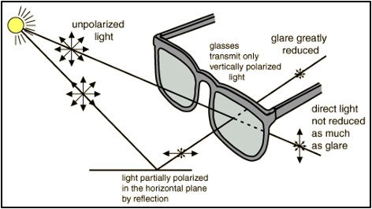

|
 previous / next column previous / next column
A PHYSICIST WRITES . . .
(October 2016)
How often does it happen that you're driving along a local road and you see a familiar face on the pavement looking in your direction, so you give its owner a wave or perhaps a toot on the horn - but you get no equivalent response? Conversely, how many times have you been walking along when you saw the lift of a hand from a driver, but you had no idea who it was (unless maybe you recognized the car)?
The explanation for this poor visual communication is, of course, that whereas you can see out perfectly clearly from the driving-seat, it's much harder for people to see in, because the light reflected off the windscreen from sky and surroundings is usually much brighter than the light being reflected off you.
A pedestrian might identify you more easily if he or she was wearing Polaroid sunglasses. These use the fact that light reflected off a flat, more or less horizontal surface tends to be horizontally polarized (meaning that the 'light waves' are vibrating from side to side instead of in all directions), as shown in the diagram. So the reflected light will be partially blocked by the lenses, which only allow vertically polarized light through them.

On second thoughts, though, you would probably have difficulty identifying the pedestrian, behind the sunglasses! But the reverse problem of seeing the driver through the windscreen leads on to something potentially serious that happened to me a couple of days ago: I arrived near home on our local bus (not for the first time or even the hundredth), alighted from it and, as usual, strolled along to its rear end intending to wait for it to move off, before thinking about checking for traffic in both directions and crossing the road.
During the short stroll I saw someone I knew, a locksmith called John, get into his van in front of his house a few yards along the road. He then reversed out so as to face me, and straightened up to wait behind the bus, but still some way away from it. As the bus departed I expected John to move off after it, past me, but he didn't. Instead, I saw the lift of his hand. I returned the wave, assumed that he was kindly letting me cross the road, and started to walk.
Before I was halfway across (luckily), there was the blare of a horn right beside me. It was from another van travelling in the opposite direction, which had been concealed from me by the bus. When I did get safely across, John drew level with me, wound down his window and explained that he had actually been pointing at the approaching van, trying to draw my attention to it. As best as I could, I said thank you very much, and don't worry about what nearly occurred.
Later I started to count the different lessons that might usefully be learnt from this narrow escape. I could think of half a dozen at least...
> Pedestrians first: you may know the rules for crossing the road - but never forget how easy it is to be distracted from them, for example when a driver is - or seems to be - waving you across. It's your responsibility to check for other traffic!
(Remember too that the direction-indicators on the front of some cars can be hard to see, not only after dark against the glare of the headlights but also in daylight because of being positioned close to daytime-running lights. And vehicle-owners: are you aware of how visible your indicators are, or aren't, against the other lights?)
> Drivers next: for the same reason of possibly distracting pedestrians, take great care in gesturing to them (or flashing other drivers, for that matter) to say that they may cross in front of you. Be as sure as you can that there are no other hazards, especially approaching traffic, that they might overlook.
> Certainly do not try to give any other sort of message with gestures - remember that your hands, like the rest of you, are likely to be hard to see behind your windscreen, as I explained at the start.
(I am not at all attempting here to transfer the blame for my near-miss to John, but I might not have started crossing the road with such confidence if he had kept his hands on the wheel...)
> Better, really, never to signal that you are giving way - either with your hands or with your lights. Instead, just let the pedestrian or other road-user calmly work out what your intention is from the speed (if any) and position of your vehicle, giving them time also to take full account of any other traffic.
> When you're on the move and passing stationary vehicles of any sort (and on whichever side of you), be ready for some idiot to step out from behind one!
> Watch for opportunities to prevent a possible accident or incident by obstructing it. For example, if John had been thinking at a really high level he could have stopped me stepping off the kerb by simply rolling his van slowly towards the bus. More generally, I'm reminded of times when I have obstructed a driver who clearly had the intention of overtaking me dangerously on a roundabout (on the outside or even the inside), by straddling the lanes while going round it.
Similarly, if I'm starting along a length of road that has been 'narrowed' on the right-hand side (by parked cars, for instance), and in the distance an oncoming vehicle is about to move out and then present me with a tight squeeze as it passes, I see nothing wrong with moving out a bit myself first - deliberately and clearly giving the other driver no room to pass at all.
I think that's enough lecturing for one column! Anyway, I'm glad to have been extracting lessons from a near-accident, instead of from an actual one...
Peter Soul
previous / next column
|